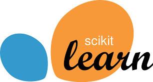
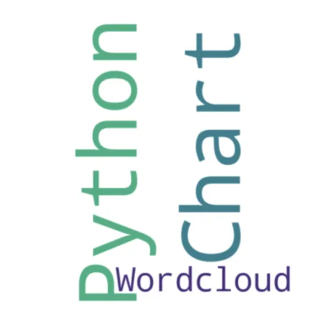

Introduction to Text Analytics
IN2039: Data Visualization for Decision Making
Department of Industrial Engineering
Agenda
- Introduction to text analytics
- Text cleaning and word clouds
- Document-Term Matrix
- Topic modeling with Latent Dirichlet Allocation
- Conclusions
Introduction to Text Analytics
Text data
So far, we have worked mainly with numerical and categorical variables.
However, a large amount of information is stored in the form of text.
- Comments on social media.
- Reviews of movies, products, and services.
- Responses to open-ended survey questions.
- Customer complaints.
Text analytics
Text analytics is the process of extracting useful information from text data.
Here, we will transform text into numerical data that can be summarized and visualized.
Our goal is not to read every document individually, but to identify patterns across many documents.
Example: Movie reviews
Imagine that you work for a movie streaming platform and have access to thousands of written reviews.
Reading all the reviews manually would take a considerable amount of time.
Can we use data visualization to understand what viewers talk about when reviewing movies?
Principle 1: Define the question
Typical questions in a basic text analysis are:
- What words appear most frequently in movie reviews?
- What are the main themes discussed by viewers?
- How common are these themes across the reviews?
Principle 2: Turn data into information
| Question | Method or graph |
|---|---|
| What words are frequent? | Word cloud, bar chart |
| What themes appear? | Topic modeling, bar charts |
| How common are the themes? | Topic prevalence plot |
scikit-learn library
- scikit-learn is a robust and popular library for machine learning in Python
- It provides simple, efficient tools for data mining and data analysis
- It is built on top of libraries such as NumPy, SciPy, and Matplotlib
- https://scikit-learn.org/stable/

nltk library
- nltk (Natural Language Toolkit) is a popular Python library for natural language processing (NLP).
- It provides tools for processing and analyzing textual data.
- It includes functions for tokenization, stemming, and removing stop words.
- https://www.nltk.org/
wordcloud library
- wordcloud is a Python library for creating word clouds from textual data.
- It allows us to visualize the most frequent words in a collection of documents.
- https://amueller.github.io/word_cloud/

Load the libraries
Let’s load the old and new libraries into Python.
Load the data
The Movie Reviews corpus is a collection of movie reviews written in English. The corpus contains positive and negative reviews, originally collected from the Internet Movie Database (IMDb). A copy of the dataset is in “movie_review.xlsx”.
Let’s load the data.
Basic terminology
- A document is one unit of text under study (one movie review in our example).
- A corpus is a collection of documents (all the movie reviews).
- A token is a unit of text, such as a word.
Text Cleaning and Word Clouds
Why clean text?
The words Movie, movie, and movie! convey essentially the same information in this example.
However, a computer may treat them as different strings.
So, ee need to define how to represent the text before computing summaries.
Basic text cleaning
- Convert uppercase letters to lowercase.
- Remove punctuation and numbers (when not relevant).
- Remove unnecessary spaces.
- Separate the text into words (tokenization).
Example of text cleaning
great movie i watched it times.str.replace(r"[^a-z\s]", " ", regex=True)replaces!,2, and.with spaces: “great movie i watched it times”..str.replace(r"\s+", " ", regex=True): Collapses those multiple spaces down to single spaces:“great movie i watched it times”
Clean the reviews
We apply the same operations to the column review.
We keep the original text so that we can return to it when interpreting our results.
Tokenization
We use .str.split() to separate the words in each review.
| words | |
|---|---|
| 0 | [films, adapted, from, comic, books, have, had... |
The result is a new column called “words” where each row is a list of the tokens (words) in a comment.
Unfortunately, in this dataset, there are some comments which, after standardization and cleaning, become empty. To exclude them from the analysis, we remove them using the function .dropna().
The subset parameter above allows us to concentrate on identifying missing values in a specific column.
Compile all words in a single array
Now, we will compile all words into a single array called words. To this end, we use the .explote() function, which transforms each element of a list-like value in a cell into its own separate row, duplicating the index and all other column values for that row.
A frequency table for words
The word array is very useful because we can use it to produce some summary statistics, such as a frequency table using value_counts().
Word cloud
A word cloud displays words using different font sizes.
In a frequency-based word cloud, words that occur more frequently are displayed using larger fonts.
The goal is to quickly identify prominent words in a corpus.
Word cloud in Python
To construct a word cloud, we first tell Python our goal using the function WordCloud(). That is, we first define the requirements for the plot and save them in an object with a specific name, say, cloud.
In the previous code, we use the basic parameters of this WordCloud():
width: Sets the width of the generated word cloud image in pixels.height: Sets the height of the generated word cloud image in pixels.background_color: Sets the canvas background color behind the words to white instead of the default black.max_words: Maximum number of most frequent words to display so the visual stays clean and readable.random_state: Fixes the random seed so the word placement and colors remain identical every time you run the code.
Once we have set our demands, we construct the word cloud using the frequency table contained in word_freq.
Above, we input the
word_freqas a dictionary, which is another common Python object. Each element consists of the actual word and its frequency.
The word cloud

Do the largest words help us answer our research question?
Stop words
Words such as
the,a,of, andisoccur frequently but are often not useful for identifying themes.We call such words stop words.
We can remove them before constructing the word cloud.
Remove stop words in Python
Scikit-learn provides a list of standard English stop words.
The expression inside brackets keeps words that satisfy both conditions.
Stop-word lists are not universal. For some analyses, removing words such as ‘not’ can destroy important information!
Let’s recompute the frequency table and update the word cloud.
The new word cloud

Stemming
Words with different endings can refer to similar concepts.
| Original words | Stem |
|---|---|
| play, playing, played | play |
| connect, connected, connecting | connect |
| movies, movie | movi |
Stemming reduces words to a common form using rules for removing or modifying endings.
Stemming in Python
We use the Porter stemmer from nltk. This function takes a single word string and strips its suffixes using a sequential set of heuristic rules to return its root form (for example, turning “running” or “runs” into “run”).
Before showing the revised word cloud, we recompute the frequency table and update the word cloud.
Word cloud after stemming

Principle 3: Apply graphic design
We can improve the word cloud using additional commands.

Document-Term Matrix
From text to numerical data
Consider three short documents:
- Document 1: funny movie funny
- Document 2: funny actor
- Document 3: action movie
We count the number of times each term occurs in each document.
Document-term matrix
| Document | action | actor | funny | movie |
|---|---|---|---|---|
| 1 | 0 | 0 | 2 | 1 |
| 2 | 0 | 1 | 1 | 0 |
| 3 | 1 | 0 | 0 | 1 |
Each row represents a document, and each column represents a term.
Each entry is the frequency of a term in a document.
Bag of words
The document-term matrix is an example of the bag-of-words representation.
- We retain the frequency of each term.
- We lose the order of the words.
For example, dog bites man and man bites dog have the same bag-of-words representation.
Document-term matrix in Python
We use CountVectorizer() from scikit-learn.
Create the matrix for the reviews
We join the cleaned terms to obtain one string per review.
(64704, 3000)The basic parameters of this function are:
min_df: The minimum document frequency required for a term to be included in the vocabulary, ignoring rare words that appear in fewer documents than this threshold (specified as an integer count or a proportion).max_df: The maximum document frequency allowed for a term, ignoring overly common corpus-specific words that appear in more documents than this threshold (specified as an integer count or a proportion).
max_features: The maximum number of top terms to keep in the vocabulary, ordered by their overall frequency across the entire corpus.stop_words='english': removes the English stop words (ENGLISH_STOP_WORDS)token_pattern=r"(?u)\b\w\w+\b": Keeps only alphanumeric words of 2+ characters, ignoring punctuation and single letters.
Inspect the matrix
| abandoned | abilities | ability | able | absolute | absolutely | absurd | academy | |
|---|---|---|---|---|---|---|---|---|
| 0 | 0 | 0 | 0 | 0 | 0 | 0 | 0 | 0 |
| 1 | 0 | 0 | 0 | 0 | 0 | 0 | 0 | 0 |
| 2 | 0 | 0 | 0 | 0 | 0 | 0 | 0 | 0 |
| 3 | 0 | 0 | 0 | 0 | 0 | 0 | 0 | 0 |
| 4 | 0 | 0 | 0 | 0 | 0 | 0 | 0 | 0 |
The matrix contains many zeros because most documents contain only a small subset of all terms.
Topic Modeling
Latent Dirichlet Allocation (LDA)
LDA is an unsupervised statistical model that identifies latent (unobserved) topics in a collection of documents.
The basic idea is that:
- Each document is a mixture of topics.
- Each topic is a probability distribution over terms.
A hypothetical example
| Term | Topic 1 | Topic 2 |
|---|---|---|
| actor | 0.40 | 0.05 |
| performance | 0.35 | 0.05 |
| explosion | 0.10 | 0.45 |
| action | 0.15 | 0.45 |
Each column sums to one. We might interpret Topic 1 as acting and Topic 2 as action scenes.
The names are assigned by the analyst, not by LDA.
A mixture of topics
A hypothetical review may contain 70% Topic 1 and 30% Topic 2.

Fit the LDA model in Python
We fit the LDA model with a user-specified number of topics to all the reviews.
LatentDirichletAllocation(n_components=5, random_state=301655)In a Jupyter environment, please rerun this cell to show the HTML representation or trust the notebook.
On GitHub, the HTML representation is unable to render, please try loading this page with nbviewer.org.
LatentDirichletAllocation(n_components=5, random_state=301655)
Term probabilities by topic
The attribute .components_ has the fitted weights of terms for each topic. We normalize each row so that it sums to one.
| abandoned | abilities | ability | able | absolute | |
|---|---|---|---|---|---|
| 1 | 0.000003 | 0.000126 | 0.000672 | 0.000095 | 0.000211 |
| 2 | 0.000002 | 0.000249 | 0.000490 | 0.001059 | 0.000091 |
| 3 | 0.000187 | 0.000089 | 0.000075 | 0.000258 | 0.000002 |
| 4 | 0.000003 | 0.000024 | 0.000228 | 0.000593 | 0.000129 |
| 5 | 0.000384 | 0.000003 | 0.000155 | 0.001718 | 0.000056 |
Identify the main terms of each topic
Topic 1
['character', 'film', 'story', 'plot', 'good', 'does', 'star', 'course']
Topic 2
['film', 'like', 'characters', 'films', 'movie', 'good', 'scenes', 'just']
Topic 3
['man', 'new', 'played', 'john', 'love', 'plays', 'life', 'wife']
Topic 4
['movie', 'don', 'know', 'just', 'film', 'say', 'really', 'make']
Topic 5
['film', 'time', 'work', 'people', 'scene', 'way', 'just', 'life']Can you assign a meaningful name to each topic?
Plot the terms of a topic

Plot the terms of all topics
We create a tidy dataset with the ten most probable terms of each topic.
Faceted plot of topics
Code
fig, axes = plt.subplots(2, 3, figsize=(10, 5.5), sharex=True)
for topic, ax in zip(topic_terms.index, axes.flat):
subset = plot_data.query("Topic == @topic")
sns.barplot(data=subset, x="Probability", y="Term",
color="darkblue", ax=ax)
ax.set_title(f"Topic {topic}")
ax.set_ylabel("")
for ax in list(axes.flat)[n_topics:]:
ax.set_visible(False)
plt.tight_layout()
plt.show()
Topic proportions by document
The method .transform() estimates the mixture of topics for each review.
| Topic 1 | Topic 2 | Topic 3 | Topic 4 | Topic 5 | |
|---|---|---|---|---|---|
| 0 | 0.011 | 0.467 | 0.011 | 0.218 | 0.292 |
| 1 | 0.211 | 0.017 | 0.737 | 0.017 | 0.017 |
| 2 | 0.014 | 0.399 | 0.382 | 0.191 | 0.014 |
| 3 | 0.029 | 0.571 | 0.029 | 0.029 | 0.342 |
| 4 | 0.041 | 0.043 | 0.040 | 0.835 | 0.041 |
Each row sums to one (up to rounding).
How common are the topics?
We compute the average estimated proportion of each topic across the reviews.
prevalence = mixtures.mean().sort_values(ascending=False).reset_index()
prevalence.columns = ["Topic", "Average proportion"]
plt.figure(figsize=(8, 4))
sns.barplot(data=prevalence, x="Average proportion", y="Topic",
color="darkblue")
plt.xlim(0, 1)
plt.grid()
plt.title("Average topic proportions across movie reviews")
plt.show()prevalence = mixtures.mean().sort_values(ascending=False).reset_index()
prevalence.columns = ["Topic", "Average proportion"]
plt.figure(figsize=(7, 3))
sns.barplot(data=prevalence, x="Average proportion", y="Topic",
color="darkblue")
plt.xlim(0, 1)
plt.grid()
plt.title("Average topic proportions across movie reviews")
plt.show()
Conclusion
Return to our research question
What are the main themes that people discuss when reviewing movies?
- Inspect the terms with the highest probabilities in each topic.
- Assign a descriptive name if the terms suggest a coherent theme.
- Read original reviews with high estimated proportions of that topic.
- Compare the prevalence of the topics.
Verify the interpretation
For example, we can read the review with the largest estimated proportion of Topic 1.
what on earth is he doing in this ?Does the original text support our interpretation of the topic?
Limitations
- Cleaning and stop-word choices affect the results.
- Bag-of-words methods ignore word order and context.
- Word clouds do not support precise comparisons.
- LDA topics may overlap or lack a clear interpretation.
- Results depend on the corpus, vocabulary, number of topics, and model fitting.
Return to main page

Tecnologico de Monterrey